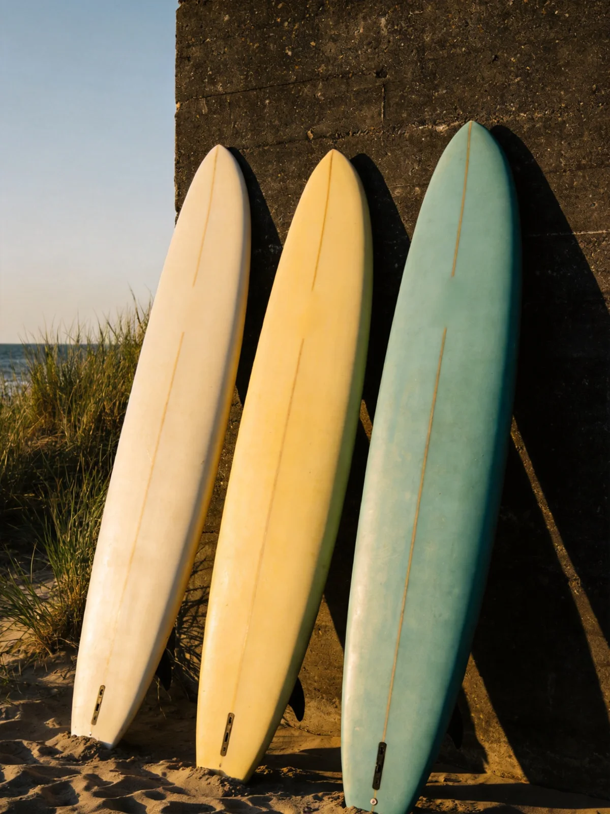
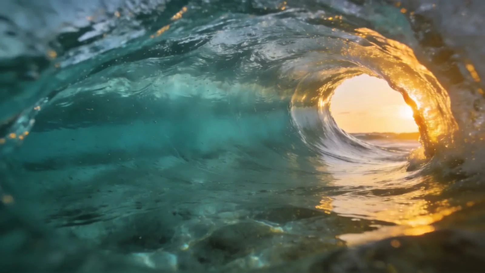

Less screen. More salt.
Get out
of your head.
Into the water.
✳
Some things make more sense when you feel them. A little courage. A clean line. That first wave you want to ride again.
Find your starting point ↗
Room for every kind of rider
First wave.
Next level.
Same ocean.
You don’t need to look the part. Start with a board that gives you room to learn, and a session that meets you where you are.
Start steady 01Find your line 02Make it yours 03

There’s a whole world out here.Find your fit ↓
Your next session
Where are
you at?
A softer start
Make the first one count.
Begin with ocean awareness, a stable board and the basics of finding your feet. Save this session direction to keep it handy.
Build your confidence
Less guessing. More feeling.
Focus your next session on positioning, catching waves and a more consistent pop-up.
A cleaner line
A little further down the face.
Explore trimming, turns and choosing the right wave. Build on the skills you already have.
GREENROOM